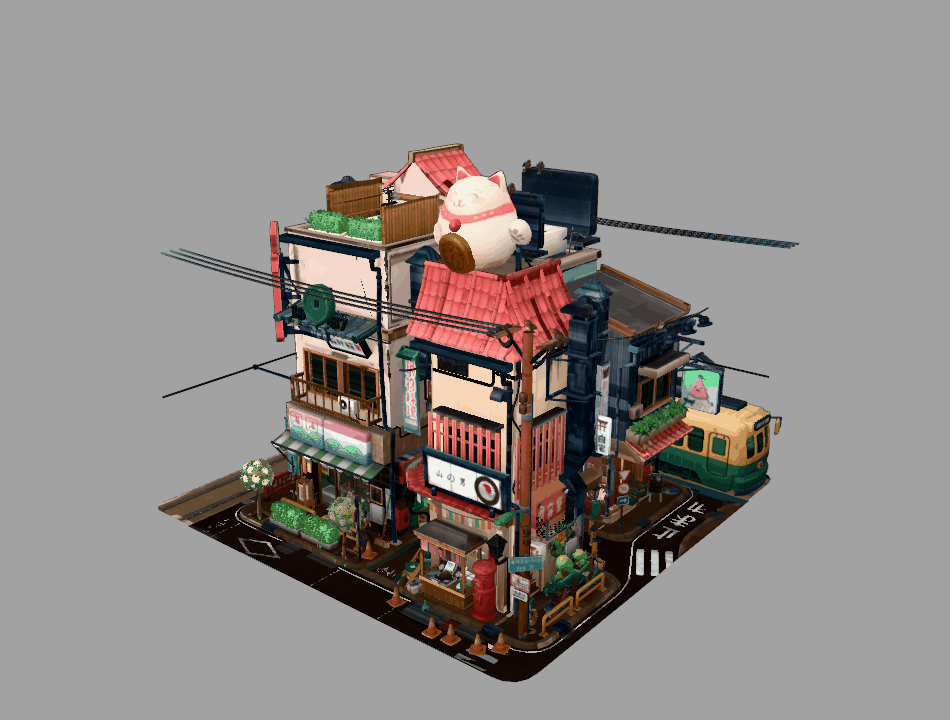
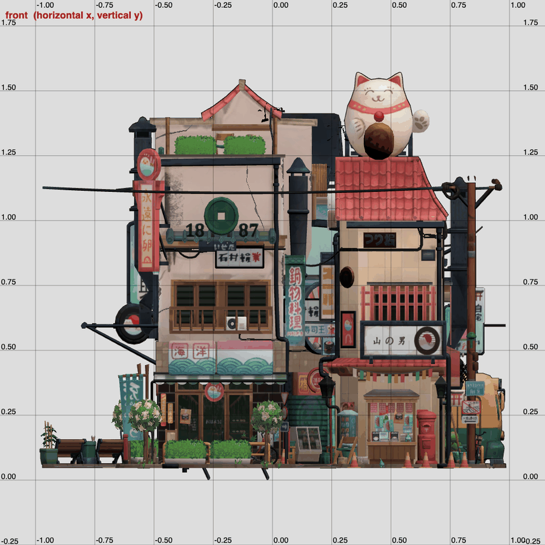
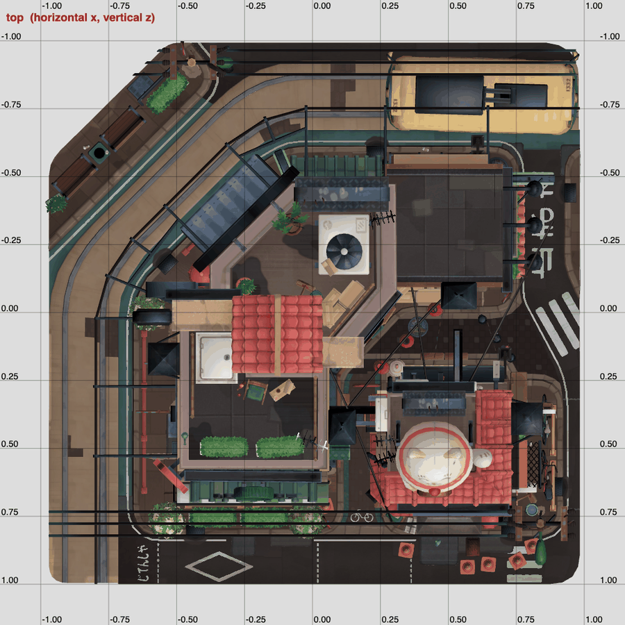
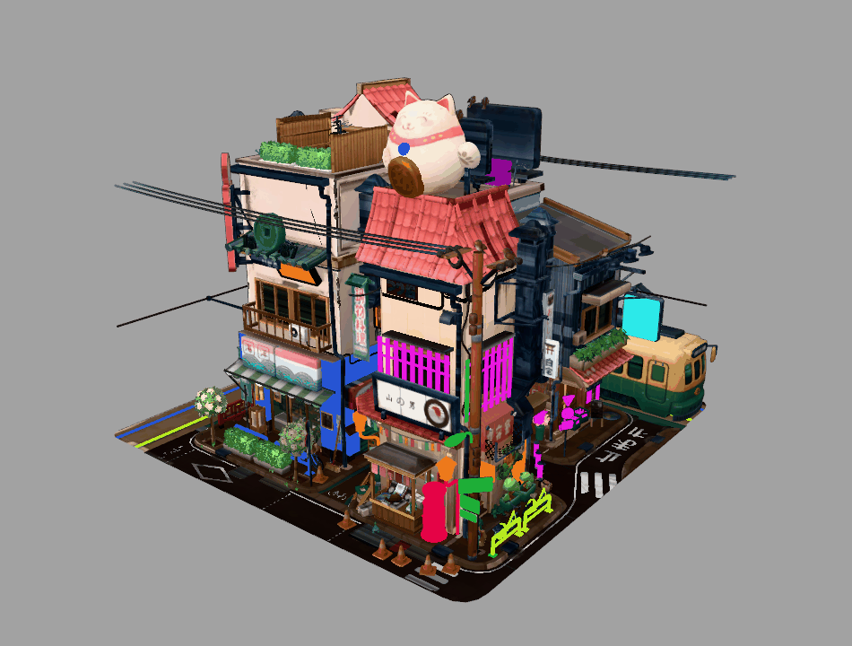
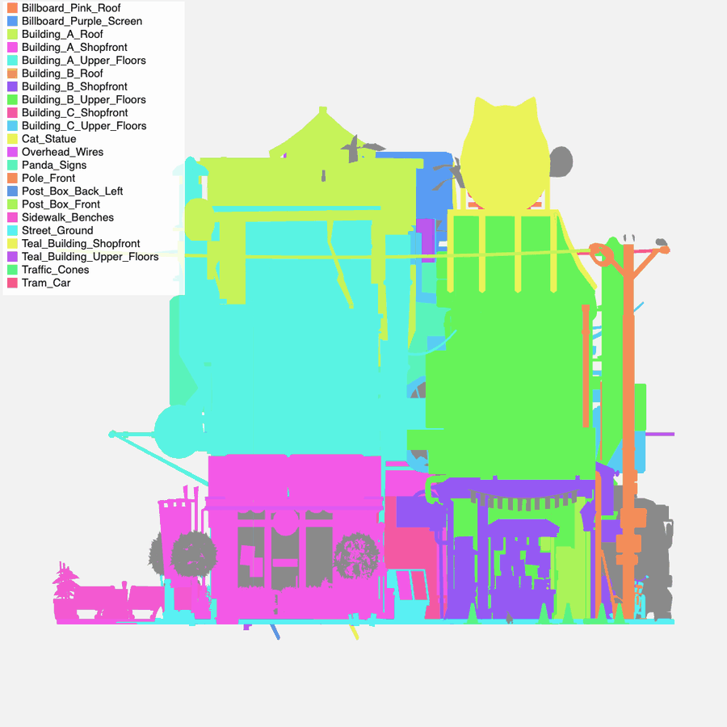
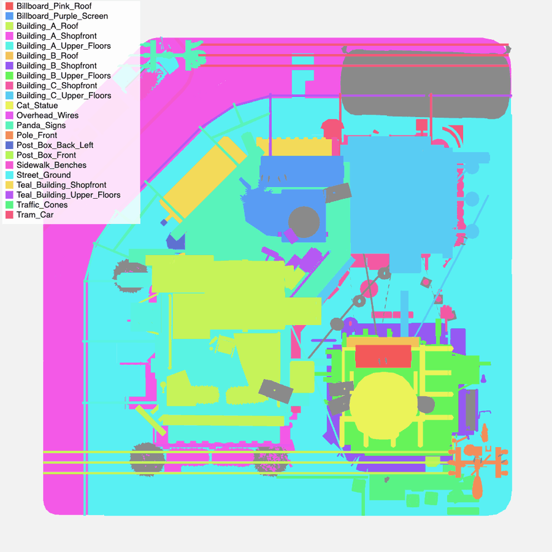
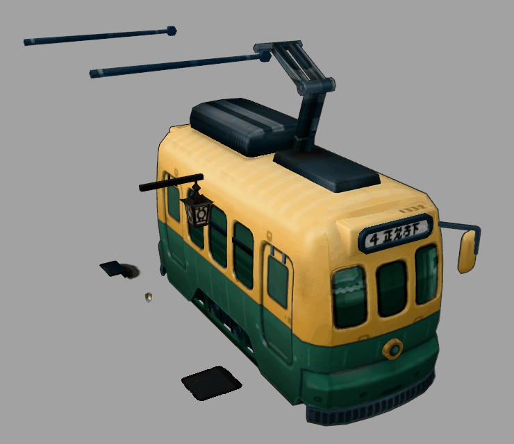
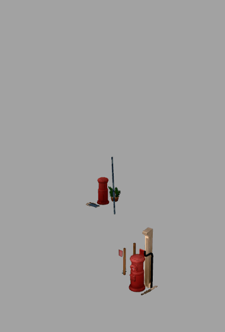
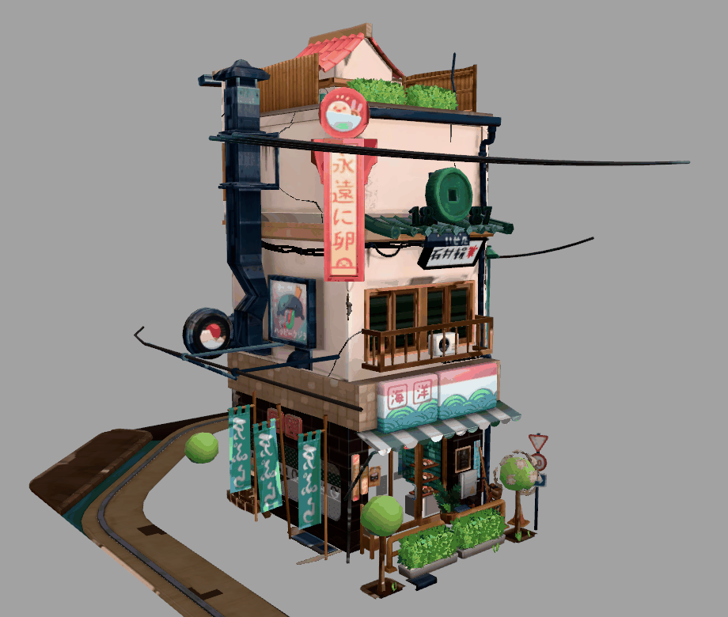

Name every part of a street-corner diorama
A furnished room was one mesh with 538 islands and 14 things worth naming. This model is the opposite problem: 71 meshes, 141,802 triangles, and the one mesh that holds the city block has 3,297 islands in 2,841 components. Naming an anchor for each is out of the question. What works is to look at the model, write down the regions you can see, and let each component go to the region that holds it, once per material. Every one of the 186 pieces that come out has a name, a class, and a place in the record. Built with the JS Shell.
SEG.describe, SEG.split, SEG.preview and the plan from Cut any textured mesh into named parts, and components from Cut a scene into named parts. The reference is guides/MESH_SEGMENT.md. What is new here is the plan: parts given by component, with the components chosen by where they are, and one class that selects the same object across every material it is made of.
1 The model, its licence, and what changed
Littlest Tokyo by Glen Fox (glenatron), licensed Creative Commons Attribution 4.0. The file's own metadata says so, and names the Sketchfab page (sketchfab.com/models/94b24a60dc1b48248de50bf087c0f042); the three.js example that ships the file credits the same artist ("CC Attribution") and links ArtStation. This page loads the file from the three.js repository, at a pinned commit:
https://github.com/mrdoob/three.js/blob/f405199a0ce26134efbf2d654a634efa5655b756/examples/models/gltf/LittlestTokyo.glb
sha256 8375c2aa6808e28ad1cb9c0d43e1513f57ffd7865244bf66bbbd5bb0e907e06d 4,133,072 byteslittletokyo.json in tejaswigowda/test1 under the same licence, with the same credit; the example link on the index card opens it.2 Import it, and count what you have
Start from an empty scene (File, New). Download the .glb from the address above and drop it on the editor, or use File, Import. Accept the dialog's defaults. The Shell logs:
↳ Normalized "LittlestTokyo.glb": scaled ×0.00362, centered & grounded (reversible — undo to restore).
ℹ Imported "LittlestTokyo.glb" with 71 separable parts.
ℹ 67 part(s) are textured: setting a color will TINT the texture (map × color), not replace it.The importer has made one mesh per material per node, so 71 is a count of mesh nodes, not of objects. Ask for the shape of it:
(() => { const rows = []; scene.traverse(o => { if (o.isMesh) rows.push([o.name, Math.round((o.geometry.index ? o.geometry.index.count : o.geometry.attributes.position.count) / 3)]); }); rows.sort((a, b) => b[1] - a[1]); return { meshes: rows.length, triangles: rows.reduce((s, r) => s + r[1], 0), biggest: rows.slice(0, 7).map(r => r.join(': ')) }; })(){
"meshes": 71,
"triangles": 141802,
"biggest": [
"Object674_outline_0: 40734",
"Object649_normal_0: 29276",
"Object649_metalmat_0: 17350",
"Object649_Plastic_Soft_0: 16935",
"Object649_paintmat_0: 9438",
"Object674_outline_0_1: 9124",
"Object675_outline_0: 2966"
]
}Read it as a map of where the work is. Object649_* is the whole city block, which looks like one baked object split by material into eleven meshes. The three _outline_ meshes are Blender-style inverted hulls that draw the black outline (the two big ones alone are 49,858 of the 141,802 triangles, 35%; they have no UVs and nothing to cut, so they are named whole). Object675_* is the tram. The other fifty-odd meshes are small, already separate objects: birds, cables, lanterns. So the job has two halves: cut the meshes that hold many objects, and name the meshes that are already one object.
3 Fix the names a selector cannot reach
Seven meshes came in with a # in the name (Object649_Material_#5511_0). In a selector # means "id", so SEG.components('#Object649_Material_#5511_0') cannot reach it. Rename them:
scene.traverse(o => { if (o.isMesh && o.name.includes('#')) o.name = o.name.replace(/#/g, '') })[ "Object649_Material_#5511_0 -> Object649_Material_5511_0",
"Object649_Material_#5512_0 -> Object649_Material_5512_0",
"Object705_Material_#5516_0 -> Object705_Material_5516_0",
"Object706_Material_#5518_0 -> Object706_Material_5518_0", … ]4 Pin and hash the source
SEG.split will not cut without a source it can name exactly: the licence, the credit, and the hash of the file. SEG.source fetches the file and computes them; keep the result on window, because each Shell line is its own scope.
SEG.source('https://raw.githubusercontent.com/mrdoob/three.js/f405199a0ce26134efbf2d654a634efa5655b756/examples/models/gltf/LittlestTokyo.glb', { licence: 'CC-BY-4.0', attribution: 'Littlest Tokyo by Glen Fox (glenatron), https://sketchfab.com/models/94b24a60dc1b48248de50bf087c0f042' }).then(s => { window.src = s })JSON.stringify(window.src, null, 1)
{ "url": "https://raw.githubusercontent.com/mrdoob/three.js/f405199a…/examples/models/gltf/LittlestTokyo.glb",
"page": "https://github.com/mrdoob/three.js/blob/f405199a…/examples/models/gltf/LittlestTokyo.glb",
"commit": "f405199a0ce26134efbf2d654a634efa5655b756",
"sha256": "8375c2aa6808e28ad1cb9c0d43e1513f57ffd7865244bf66bbbd5bb0e907e06d",
"bytes": 4133072,
"licence": "CC-BY-4.0",
"attribution": "Littlest Tokyo by Glen Fox (glenatron), https://sketchfab.com/models/94b24a60dc1b48248de50bf087c0f042" }The URL has to be the raw.githubusercontent.com form with a full commit, not the github.com/…/blob/… page and not a branch name: SEG refuses both and prints the address to use. The hash and size match the file in step 1, which is how anyone can check that the record describes the file they have.
5 Why anchors do not work here
In the room tutorial you named 14 components and SEG placed the other 268 on the nearest. Count what that would take here:
| Mesh | Islands | Components | Triangles |
|---|---|---|---|
| Object649_normal_0 | 3,297 | 2,841 | 29,276 |
| Object649_metalmat_0 | 655 | 407 | 17,350 |
| Object649_Plastic_Soft_0 | 465 | 244 | 16,935 |
| Object705_Material_5516_0 | 207 | 193 | 1,527 |
| Object649_paintmat_0 | 267 | 178 | 9,438 |
In Object649_normal_0 the 1,291 largest components hold only 80% of the triangles: the long tail is tiles, leaves, sign lettering and cracks, thousands of pieces of a few triangles each. No component is "the building", and an anchor is a component you can justify naming. There is no short list of them to name.
But the evidence SEG gives for a scene still holds: every component has a centre in the world frame and a size. A pole, a tram and a cat are all somewhere, and the same somewhere in all eleven material meshes, because they share one set of coordinates. So name the places instead.
6 Look at it, then write down the regions
The importer scaled the model to about 2 units across, centred and grounded: x runs −1 to 1 left to right, z −1 (back) to 1 (front), y up from 0 to 1.57. Look at it square-on with a grid. These two views are drawn with an orthographic camera and a grid every 0.25, so a pixel is a coordinate:

x across, y up.
x across, z down (the front is at the bottom).From the two views, and a third and fourth from the back and the left, I wrote down 22 regions: the objects that stand out (the tram, the cat, two rooftop billboards, two post boxes, the cones, the poles, the panda signs), the three buildings plus the teal one cut into shopfront, upper floors and roof by height, the sidewalk with its benches, and the street. Each region is a box, a name and the classes it will carry. One is a rule instead of a box: a component at least 0.45 long and at most 0.03 thick on its second axis is a wire.
window.REGIONS = [
// name, classes, box: [x0, x1, y0, y1, z0, z1] in world units; the first region that holds a component's centre takes it
{ name: 'Overhead_Wires', rule: 'wire', classes: ['wire', 'utility'] },
{ name: 'Traffic_Cones', classes: ['cone', 'street-furniture'], box: [0.15, 0.98, 0.0, 0.14, 0.8, 1.05] },
{ name: 'Post_Box_Front', classes: ['post-box', 'street-furniture'], box: [0.58, 0.74, 0.0, 0.32, 0.66, 0.86] },
{ name: 'Post_Box_Back_Left', classes: ['post-box', 'street-furniture'], box: [-0.52, -0.33, 0.0, 0.32, -0.26, -0.04] },
{ name: 'Pole_Front', classes: ['pole', 'utility', 'street-furniture'], box: [0.72, 0.95, 0.0, 1.3, 0.68, 0.98] },
{ name: 'Pole_Back', classes: ['pole', 'utility', 'street-furniture'], box: [0.72, 0.95, 0.0, 1.3, -1.0, -0.82] },
{ name: 'Tram_Car', classes: ['tram', 'vehicle'], box: [0.22, 0.98, 0.0, 0.95, -1.03, -0.58] },
{ name: 'Billboard_Purple_Screen', classes: ['billboard', 'sign', 'rooftop'], box: [-0.15, 0.35, 1.0, 1.5, -0.55, -0.25] },
{ name: 'Billboard_Pink_Roof', classes: ['billboard', 'sign', 'rooftop'], box: [0.3, 0.62, 1.15, 1.55, 0.28, 0.42] },
{ name: 'Cat_Statue', classes: ['cat', 'statue', 'rooftop'], box: [0.27, 0.72, 1.12, 1.8, 0.3, 0.8] },
{ name: 'Panda_Signs', classes: ['panda', 'sign'], box: [-0.65, -0.03, 0.52, 1.3, -0.62, -0.08] },
{ name: 'Building_B_Roof', classes: ['building', 'building-b', 'roof'], box: [0.25, 0.8, 1.12, 1.4, 0.2, 0.8] },
{ name: 'Building_B_Upper_Floors', classes: ['building', 'building-b', 'upper-floors'], box: [0.25, 0.8, 0.5, 1.12, 0.2, 0.8] },
{ name: 'Building_B_Shopfront', classes: ['building', 'building-b', 'shopfront'], box: [0.25, 0.8, 0.0, 0.5, 0.2, 0.8] },
{ name: 'Building_A_Roof', classes: ['building', 'building-a', 'roof'], box: [-0.55, 0.07, 1.05, 1.6, -0.02, 0.8] },
{ name: 'Building_A_Upper_Floors', classes: ['building', 'building-a', 'upper-floors'], box: [-0.55, 0.07, 0.5, 1.05, -0.02, 0.8] },
{ name: 'Building_A_Shopfront', classes: ['building', 'building-a', 'shopfront'], box: [-0.55, 0.07, 0.0, 0.5, -0.02, 0.8] },
{ name: 'Building_C_Upper_Floors', classes: ['building', 'building-c', 'upper-floors'], box: [0.2, 0.8, 0.5, 1.3, -0.62, 0.2] },
{ name: 'Building_C_Shopfront', classes: ['building', 'building-c', 'shopfront'], box: [0.2, 0.8, 0.0, 0.5, -0.62, 0.2] },
{ name: 'Teal_Building_Upper_Floors', classes: ['building', 'teal-building', 'upper-floors'], box: [-0.5, 0.3, 0.5, 1.3, -0.62, -0.02] },
{ name: 'Teal_Building_Shopfront', classes: ['building', 'teal-building', 'shopfront'], box: [-0.5, 0.3, 0.0, 0.5, -0.62, -0.02] },
{ name: 'Sidewalk_Benches', classes: ['sidewalk', 'bench', 'street-furniture'], box: [-1.0, -0.55, 0.0, 0.35, -0.8, -0.2] },
{ name: 'Street_Ground', classes: ['street', 'ground'], box: [-1.2, 1.2, -0.2, 0.09, -1.2, 1.2] },
]The order matters: small, specific regions come first so that a post box is a post box before it is "the street". A component whose centre is in no box goes to the nearest box, so nothing is left over (SEG would refuse a plan that leaves a component out). The numbers are what I read off the grid; they are coarse on purpose, and step 9 shows where.
7 The helper, and the first cut
Two functions turn the plan into a SEG.split call. regionOf is the rule above. cutMesh asks SEG for the components of one mesh, sorts their numbers into regions, and makes one part per region, named Region_Material and carrying the region's classes plus the material's, so the same region in two meshes gets two parts with the same classes.
window.regionOf = c => {
const p = c.centre;
for (const r of REGIONS) {
if (r.rule === 'wire') { const s = [...c.size].sort((a, b) => a - b); if (s[2] >= 0.45 && s[1] <= 0.03) return r; continue; }
const b = r.box;
if (p[0] >= b[0] && p[0] <= b[1] && p[1] >= b[2] && p[1] <= b[3] && p[2] >= b[4] && p[2] <= b[5]) return r;
}
const d = r => { let t = 0; for (let i = 0; i < 3; i++) { const v = p[i], lo = r.box[2*i], hi = r.box[2*i+1]; if (v < lo) t += (lo - v) ** 2; else if (v > hi) t += (v - hi) ** 2; } return t; };
return REGIONS.filter(r => r.box).sort((a, b) => d(a) - d(b))[0]; // in no box: the nearest one
}
window.cutMesh = (mesh, suffix, group) => {
const by = {};
for (const c of SEG.components('#' + mesh)) { const r = regionOf(c); (by[r.name] = by[r.name] || { r, ids: [] }).ids.push(c.component); }
const parts = Object.values(by).map(({ r, ids }) => ({ component: ids, name: r.name + '_' + suffix, classes: [...r.classes, suffix.toLowerCase()] }));
return SEG.split('#' + mesh, { group, source: window.src, parts });
}Start with the smallest of the big meshes, the paint (178 components), and read the components first:
SEG.describe('#Object649_paintmat_0')component 0: 406 triangles (1 island: 0), size 0.094,0.210,0.097, centre 0.650,0.162,0.746, at 0.83,0.08,0.88, colours rgb(222,91,87) 75% rgb(173,63,58) 24% rgb(250,146,142) 1%
component 1: 406 triangles (1 island: 1), size 0.096,0.210,0.096, centre -0.408,0.162,-0.140, at 0.27,0.08,0.43, colours rgb(222,91,87) 75% rgb(173,63,58) 24% rgb(250,146,142) 1%
component 2: 198 triangles (4 islands: 16,17,246,262), size 0.258,0.292,0.591, centre -0.353,0.267,0.273, at 0.30,0.16,0.64, colours rgb(32,23,22) 84% …
…
(267 islands joined into 178 components where they touch in space; world frame, y up. …)Look at components 0 and 1: the same 406 triangles, the same size to a millimetre, the same red. Two identical red objects, one at the front right and one at the back left. They are post boxes. In my first plan only the front one had a region. The first cut:
cutMesh('Object649_paintmat_0', 'Paint', 'Paint_Parts')Post_Box_Paint: 836 triangles | Teal_Building_Shopfront_Paint: 808 triangles | Building_A_Shopfront_Paint: 1030 triangles | Building_B_Shopfront_Paint: 1827 triangles | …
⚠ absorbed: Teal_Building_Shopfront_Paint: it is assembled from 8 components and 95% of its texture is one colour (#d3504c): it has probably absorbed a run of similar pieces
✨ Scene updated — 1 command executedThe cut worked and every triangle was kept, and SEG still said something was wrong with it. absorbed fires when a part is made of many components and nearly all one colour: a run of similar things that were swallowed by a neighbour. Eight red components in the teal building's volume, 95% one red: the second post box had been given to the teal building because no region claimed it. SEG.split made the whole cut as one undo step, so editor.undo() took it back. Add the second post box to the plan (it is in the list above as Post_Box_Back_Left), and cut again:
Post_Box_Front_Paint: 836 triangles | Post_Box_Back_Left_Paint: 660 triangles | Building_A_Shopfront_Paint: 1030 triangles | … | Teal_Building_Shopfront_Paint: 148 triangles | …
✨ Scene updated — 1 command executedThe warning is gone, and the teal building's paint went from 808 triangles to 148: the 660 that left it are the back post box, now its own part.
8 Cut the other eight
cutMesh('Object649_normal_0', 'Surface', 'Surface_Parts')
cutMesh('Object649_metalmat_0', 'Metal', 'Metal_Parts')
cutMesh('Object649_Plastic_Soft_0', 'SoftPlastic', 'SoftPlastic_Parts')
cutMesh('Object649_Material_5511_0', 'Mat5511', 'Mat5511_Parts')
cutMesh('Object649_Material_5512_0', 'Mat5512', 'Mat5512_Parts')
cutMesh('Object649_alpha_glass_0', 'AlphaGlass', 'AlphaGlass_Parts')
cutMesh('Object649_glassmat_0', 'Glass', 'Glass_Parts')
cutMesh('Object705_Material_5516_0', 'Mat5516', 'Mat5516_Parts')Paste them one at a time. Each call is its own undo step, and in my runs, in a browser with software rendering, each finished within the 20 seconds I allowed (the largest mesh, with 2,841 components, is the slow one). The suffix is the glTF material's own name (normal, metalmat, Plastic_Soft, paintmat) in a readable form, or its number for the three that have only a number (Mat5511): I do not know what those materials are meant to be, so I did not guess. The metal cut printed two warnings, absorbed: Pole_Front_Metal (14 components, 96% one dark grey) and absorbed: Sidewalk_Benches_Metal (9 components, 94% one blue-grey). Both are what they say: the poles and the benches really are runs of the same metal, so I left them, as the room tutorial leaves its warning. The other eight cuts printed none.
9 Check the cut
SEG.preview paints each part of one group a flat colour, in one undoable step, and SEG.restore() puts the textures back (it printed textured materials restored).
SEG.preview('#Paint_Parts')
SEG.preview('#Paint_Parts'): each of the 17 paint parts a flat colour, the rest of the model still textured. Both post boxes are parts of their own now.One group at a time shows one material. To see all the regions at once I drew every cut part in a colour taken from its region name, so the same region is one colour in all nine meshes, from the front and from above. (This figure is a throwaway offscreen render, not a Strata command; grey parts are the ones that were never cut.)


Building_A_Shopfront and the road is Street_Ground. The cat's region includes the red bamboo stand under it. The "post box" regions include the plant and the signpost standing beside them. And a region is a box, not an object: the panda signs' box also holds a little of the teal facade behind them. The parts are regions of the model, by material, not outlines of individual objects; for an object-by-object cut you would need anchors, and the room tutorial shows how.10 Name what was already separate
The 62 meshes that are one object each need no cutting, only a name an author would choose and a class. tagClass(node, 'bird') is the same undoable class call the Shell uses everywhere. I read each name off the mesh's position and size in the report and the views above; where I could only say what it looks like, the name says that (Round_Fixture_Back_Left, Thin_Strip_Roof_A), and the A and B of a pair mean only "one of two".
| Group | Meshes | Names | What the evidence was |
|---|---|---|---|
| Tram | 6 | Tram_Body_Metal, _Paint, Tram_Windows_Glass, Tram_Outline_Hull, Tram_Wheel_Set_A, _B | one node (Object675) split by material; the two wheel sets are 7 cm wide and 24 cm long, low, under it |
| Birds | 18 | Bird_1 … Bird_6, each with _Wing_A and _Wing_B | six skinned 96-triangle meshes at the height of the wires, each with two 30-triangle planes at the same place |
| Cables | 6 | Cable_1 … Cable_6 | long, thin, at wire height |
| Sprout figure | 6 | Sprout_Body, _Hand_A, _Hand_B, _Foot_A, _Foot_B, _Leaf | the model's own names (body, hand1, leaf…) on one small figure by the cones |
| Trees | 4 | Tree_Front_Center, Tree_Front_Left, Tree_Left_Side, Hedge_Left_Side | three identical alpha-leaf meshes at three places, and one long low one |
| Lanterns, signs, fixtures | 17 | Paper_Lantern_1…3, Sunburst_Sign_Face/_Back, Rooftop_Fan_Metal/_Paint, Wall_Aircon_Plastic/_Metal, Cat_Paw_Raised, Round_Fixture_Back_Left, Small_Skinned_Figure_Surface/_Metal, Thin_Strip_Front_A/_B/Roof_A/_B | identical copies at one height (lanterns), a round disc with an eye (sunburst), a fan on a roof, a box with a fan on a wall, a raised paw on the cat, and shapes I can only describe |
| Outline hulls and the block's leftovers | 5 | Outline_Hull_Block, Outline_Hull_Details, Alpha_Cutouts, Tinted_Glass_Panels, Interior_Fittings | no UVs and a hull's shape; the three small Object649_* meshes that were not worth cutting (56, 52 and 40 triangles) |
The names are a map from the old name to a new name and its classes, applied in one pass. This is the whole map:
window.RENAMES = {
Object675_metalmat_0: ['Tram_Body_Metal', 'tram vehicle metal'],
Object675_paintmat_0: ['Tram_Body_Paint', 'tram vehicle paint'],
Object675_glassmat_0: ['Tram_Windows_Glass', 'tram vehicle glass'],
Object675_outline_0: ['Tram_Outline_Hull', 'tram vehicle outline'],
Object680_metalmat_0: ['Tram_Wheel_Set_A', 'tram vehicle wheel metal'],
Object681_metalmat_0: ['Tram_Wheel_Set_B', 'tram vehicle wheel metal'],
Object674_outline_0: ['Outline_Hull_Block', 'outline hull'],
Object674_outline_0_1: ['Outline_Hull_Details', 'outline hull'],
Object649_alpha_0: ['Alpha_Cutouts', 'alpha cutout'],
Object649_glass_transp_0: ['Tinted_Glass_Panels', 'glass tinted'],
Object649_interiors_0: ['Interior_Fittings', 'interior'],
Object687_normal_0: ['Bird_1', 'bird animal skinned'],
Plane001_normal_0: ['Bird_1_Wing_A', 'bird animal wing'],
Plane003_normal_0: ['Bird_1_Wing_B', 'bird animal wing'],
Object688_normal_0: ['Bird_2', 'bird animal skinned'],
Plane104_normal_0: ['Bird_2_Wing_A', 'bird animal wing'],
Plane103_normal_0: ['Bird_2_Wing_B', 'bird animal wing'],
Object697_normal_0: ['Bird_3', 'bird animal skinned'],
Plane105_normal_0: ['Bird_3_Wing_A', 'bird animal wing'],
Plane106_normal_0: ['Bird_3_Wing_B', 'bird animal wing'],
Object698_normal_0: ['Bird_4', 'bird animal skinned'],
Plane108_normal_0: ['Bird_4_Wing_A', 'bird animal wing'],
Plane107_normal_0: ['Bird_4_Wing_B', 'bird animal wing'],
Object699_normal_0: ['Bird_5', 'bird animal skinned'],
Plane109_normal_0: ['Bird_5_Wing_A', 'bird animal wing'],
Plane110_normal_0: ['Bird_5_Wing_B', 'bird animal wing'],
Object700_normal_0: ['Bird_6', 'bird animal skinned'],
Plane111_normal_0: ['Bird_6_Wing_A', 'bird animal wing'],
Plane112_normal_0: ['Bird_6_Wing_B', 'bird animal wing'],
wire1_Plastic_Soft_0: ['Cable_1', 'wire cable utility'],
wire2_Plastic_Soft_0: ['Cable_2', 'wire cable utility'],
wire3_normal_0: ['Cable_3', 'wire cable utility'],
wire4_normal_0: ['Cable_4', 'wire cable utility'],
wire5_normal_0: ['Cable_5', 'wire cable utility'],
wire7_normal_0: ['Cable_6', 'wire cable utility'],
body_normal_0: ['Sprout_Body', 'sprout character'],
hand1_normal_0: ['Sprout_Hand_A', 'sprout character'],
hand2_normal_0: ['Sprout_Hand_B', 'sprout character'],
foot1_normal_0: ['Sprout_Foot_A', 'sprout character'],
foot2_normal_0: ['Sprout_Foot_B', 'sprout character'],
leaf_normal_0: ['Sprout_Leaf', 'sprout character'],
Object224_normal_0: ['Small_Skinned_Figure_Surface', 'figure skinned'],
Object224_metalmat_0: ['Small_Skinned_Figure_Metal', 'figure skinned metal'],
Object078_Plastic_Soft_0: ['Cat_Paw_Raised', 'cat statue paw'],
Object608_metalmat_0: ['Rooftop_Fan_Metal', 'aircon rooftop metal'],
Object608_paintmat_0: ['Rooftop_Fan_Paint', 'aircon rooftop paint'],
Object704_Plastic_Soft_0: ['Wall_Aircon_Plastic', 'aircon plastic'],
Object704_metalmat_0: ['Wall_Aircon_Metal', 'aircon metal'],
Object081_normal_0: ['Paper_Lantern_1', 'lantern light'],
Object332_normal_0: ['Paper_Lantern_2', 'lantern light'],
Object682_normal_0: ['Paper_Lantern_3', 'lantern light'],
Object532_normal_0: ['Sunburst_Sign_Face', 'sign sunburst'],
Object531_normal_0: ['Sunburst_Sign_Back', 'sign sunburst'],
Object689_metalmat_0: ['Round_Fixture_Back_Left', 'fixture metal'],
Object619_alpha_0: ['Tree_Front_Center', 'tree foliage plant'],
Object620_alpha_0: ['Tree_Front_Left', 'tree foliage plant'],
Object621_alpha_0: ['Tree_Left_Side', 'tree foliage plant'],
Object622_alpha_0: ['Hedge_Left_Side', 'hedge foliage plant'],
Object706_Material_5518_0: ['Thin_Strip_Front_A', 'fixture thin'],
Object707_Material_5518_0: ['Thin_Strip_Front_B', 'fixture thin'],
Object708_Material_5518_0: ['Thin_Strip_Roof_A', 'fixture thin'],
Object709_Material_5518_0: ['Thin_Strip_Roof_B', 'fixture thin'],
}(() => { let n = 0, missing = []; for (const [old, [nu, cls]] of Object.entries(RENAMES)) { const o = scene.getObjectByName(old); if (!o) { missing.push(old); continue; } o.name = nu; cls.split(' ').forEach(c => tagClass(o, c)); n++; } return { renamed: n, missing }; })()
{ "renamed": 62, "missing": [] }tagClass prints one line per class (Tagged "Tram_Body_Metal" .tram), so this call is noisy: 62 meshes with two to four classes each.
11 The skeleton, and lint
The birds, the sprout and the small figure are skinned, so the model carries a skeleton: wrapper nodes (RootNode_(gltf_orientation_matrix)) and bones (_rootJoint, tail1_00). They are not parts, but the labelling gate wants every node to have a name and a class, so, as the skinned-mesh section of the guide says, give them the class rig. Some are unnamed; those get a name. Skip the nine groups SEG made: they already carry the class segmented, and are not part of a skeleton.
(() => { const root = scene.getObjectByName('LittlestTokyo.glb'); let i = 0, tagged = 0;
root.traverse(o => { if (o.isMesh || (o.userData && o.userData.segmentation)) return; if (!o.name) o.name = 'Rig_Node_' + (++i); tagClass(o, o === root ? 'model' : 'rig'); tagged++; });
return { tagged, named: i }; })()That tags 144 nodes, the model root as model and 143 others as rig, and names the 52 that had no name.
lint()lint() prints nothing when every node has a name an author chose and at least one class. Before this step it listed the wrapper and bone nodes and ended "… and 156 more". Now it is silent, and requireLabels(true) would pass.
segmentation test, so it also tagged the nine SEG groups rig. lint() cannot see that, because a wrongly classed node is still classed. I found it by reading the saved file, and fixed it with untagClass and a new commit. A clean lint says every node is labelled, not that every label is right.12 Select an object, not a material
This is what the regions buy. The tram is in four meshes by material and the cat in five, and no mesh is "the cat". But every part from a region carries that region's classes, so one selector reaches all of them.
['.tram', '.cat', '.post-box', '.bird', '.building-a', '.shopfront', '.sign', '.wire', '.tree'].map(s => s + ' ' + $S(s).length).join(' | ')
.tram 12 | .cat 6 | .post-box 9 | .bird 18 | .building-a 22 | .shopfront 32 | .sign 16 | .wire 13 | .tree 3listSelectors() prints every class with its count (.building (×67), .street-furniture (×25), .rooftop (×14), …). Look at three of them from the right side:
isolate('.tram')
isolate('.tram'): twelve parts: six of the tram's own meshes and six cut parts from its region. The long poles and the dark squares on the ground are in the tram's volume too.isolate('.cat'): six parts. The red bamboo stand is in the cat's region.
isolate('.post-box'): nine parts, two boxes and what stands beside them.isolate('.building-a')
isolate('.building-a'): 22 parts. The strip of pavement in front is in the shopfront's box, as step 9 warned.showAll() brings everything back. Selectors combine: $S('.building-a.shopfront') is the ground floor of building A in all its materials, and $S('.sign') is every panda sign and billboard.
13 Save it
File, Save writes the scene as JSON (112 MB here, because the geometry is inline), and the Git tab's commit writes it the way a repository wants it: the scene as a small manifest and parts, and the geometry as content-addressed asset files. The committed scene is littletokyo.json in tejaswigowda/test1, and it opens from a link: open it in the editor. Each of the nine groups keeps the record of its cut in userData.segmentation: the plan, the report it was made from, the pinned source and its licence. The commit path rounds animation values slightly and deterministically; the geometry is not touched.
$S('#Surface_Parts').nodes[0].userData.segmentation.source // the url, commit, sha256, bytes, licence and attribution of step 414 The log: what was segmented and what was named
Read back from the committed scene, not from memory: it was opened from GitHub in a fresh editor and counted.
| Mesh cut by SEG | Part group | Islands | Components | Parts | Triangles |
|---|---|---|---|---|---|
| Object649_normal_0 | Surface_Parts | 3,297 | 2,841 | 19 | 29,276 |
| Object649_metalmat_0 | Metal_Parts | 655 | 407 | 21 | 17,350 |
| Object649_Plastic_Soft_0 | SoftPlastic_Parts | 465 | 244 | 19 | 16,935 |
| Object649_paintmat_0 | Paint_Parts | 267 | 178 | 17 | 9,438 |
| Object705_Material_5516_0 | Mat5516_Parts | 207 | 193 | 17 | 1,527 |
| Object649_Material_5511_0 | Mat5511_Parts | 40 | 23 | 6 | 1,582 |
| Object649_Material_5512_0 | Mat5512_Parts | 49 | 35 | 13 | 148 |
| Object649_alpha_glass_0 | AlphaGlass_Parts | 33 | 15 | 3 | 319 |
| Object649_glassmat_0 | Glass_Parts | 33 | 28 | 9 | 232 |
| 9 meshes | 9 groups | 5,046 | 3,964 | 124 | 76,807 |
| Result | Count |
|---|---|
| Parts made by SEG (each with a name, a region class, a material class and a record) | 124 meshes, 76,807 triangles |
| Meshes named and classed by hand (step 10) | 62 meshes, 64,995 triangles |
| All meshes in the scene | 186, with 186 different names; 141,802 triangles, as imported |
| Regions in the plan | 22 (21 boxes and a wire rule); 22 distinct region names on the parts |
Skeleton and wrapper nodes classed rig | 143, of which 52 were unnamed and are now Rig_Node_1…52; the model root is model |
| SEG groups | 9, each classed segmented, each with a record pinned to the source hash |
lint() | silent: every node has an author's name and a class |
| SEG warnings left standing | 2 (Pole_Front_Metal, Sidewalk_Benches_Metal), read and kept |
186 = 124 + 62. The 5,046 islands became 3,964 components, and 3,964 components became 124 parts.
15 Your own model
- Import it, then count: how many meshes, and which few hold most of the triangles. Rename anything with a
#in its name. SEG.source(...)with a raw URL pinned to a commit, and your licence and credit. If the licence does not allow republishing, do not commit the cut.SEG.describe('#mesh')on the biggest. If it reports hundreds of components and no short list is worth naming, use regions. If a few dozen are, use anchors.- Look at it from four sides with a grid, write the regions, objects first, then buildings by height. Give each its classes.
- Cut the smallest textured mesh first. Read every
⚠: it is usually a region you forgot. - Cut the rest,
SEG.previewone group, then look at all the regions together from above and the front. - Name the meshes that are already one object, give the skeleton a class, run
lint(), and read the names back; lint cannot tell you they are right.
SEG.source, SEG.describe on the paint mesh, the first cut with its warning, the undo, the corrected cut, the other eight cuts, SEG.preview and SEG.restore, the 62 renames, the rig step (the version in step 11 is the corrected one; see the note there), lint(), listSelectors() and the four isolate calls. The scene was committed with the editor's own commit and opened again from GitHub: 186 meshes, 186 different names, 141,802 triangles, nine records. The volumes figure was made by a separate offscreen render. Not checked: any browser but Chrome, a machine with a GPU (the screenshots were taken with software rendering), SEG.replay on these cuts, or any model but this one. The 22 regions are one person's reading of four views, and the thresholds in the wire rule and the 0.45 length were chosen by eye. The names are my reading of position and size, not measurements: the plan states no basis for any of them, so read "Round_Fixture_Back_Left" as "a round metal thing at the back left". The material names Mat5511, Mat5512 and Mat5516 say only which glTF material the part came from.Credits and licences
People
- Tejaswi Gowda (script, scene)
- Glen Fox (glenatron) (asset)
Assets
- LittlestTokyo.glb: Littlest Tokyo by Glen Fox (glenatron), https://sketchfab.com/models/94b24a60dc1b48248de50bf087c0f042 (the file's own metadata; the three.js example credits https://artstation.com/artwork/1AGwX). Changes made: the model is cut into named parts and its meshes are renamed and classed; textures are not edited. The screenshots and card thumbnail on this page show this model. No endorsement by the artist is implied Licence: CC BY 4.0.
- Littlest Tokyo (Sketchfab page): Glen Fox (glenatron) on Sketchfab, the page the file's own metadata names. Attribution is required, and applies to the LittlestTokyo.glb above and to everything made from it Licence: CC BY 4.0.
- littletokyo.json (the segmented scene): Model by Glen Fox (glenatron); segmentation, names and classes by Tejaswi Gowda Licence: CC BY 4.0 (a derivative of LittlestTokyo.glb: keep the credit above).
Tools
- three.js (MIT) Strata is built on it; LittlestTokyo.glb is loaded from its examples directory at a pinned commit